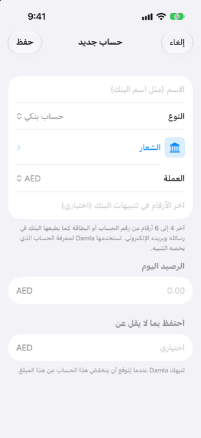

الدليل › الحسابات والبطاقات والأشخاص
الشعارات وتفاصيل الحساب
سمِّ الحساب، واختر شعارًا، وحدّد الأرقام التي يستخدمها Damla للتعرّف عليه.
لكل حساب في Damla اسم وشارة — شعار بنكه، أو لون مع الأحرف الأولى من اسمه. ويمكن أيضًا أن يحمل آخر أرقام رقم الحساب أو البطاقة. الاسم والشارة لك أنت، لتتعرّف على الحساب بنظرة واحدة. أما الأرقام فلمصلحة Damla: فهي تخبره بالحساب الذي تتحدث عنه رسالة البنك.

متى تستخدمه
- عندما تضيف حسابًا وتريد أن تمنحه اسمًا وشعار بنكه.
- عندما ينتظر تنبيه بنكي في صندوق الوارد لأن Damla لا يعرف بعد أرقام البطاقة أو الحساب.
- عندما تريد إعادة تسمية حساب لاحقًا، أو الاحتفاظ برصيد أدنى فيه، أو استثناؤه من التوقعات، أو أرشفته.
خطوة بخطوة
سمِّ الحساب واختر شعارًا
- أثناء إضافة حساب (الحسابات، زر الزائد، إضافة حساب)، اكتب اسمًا في الاسم (مثل اسم البنك).
- انقر صف الشعار. تقدّم شاشة الشعار بدون شعار (الأحرف الأولى) — شارة لونية تحمل الأحرف الأولى من اسم الحساب — وقائمة بالبنوك تحت البنوك، وبحثًا تحت غير موجود في القائمة؟.
- انقر بنكًا في القائمة لاستخدامه.
- إن لم يكن البنك في القائمة، اكتب اسمه في حقل اسم البنك وانقر ابحث عن الشعار عبر الإنترنت.
- انقر النتيجة التي تريدها. يُنزّلها Damla ويحتفظ بها على هذا الهاتف. وانقر إلغاء لترك الشعار كما كان.
يبدأ حقل اسم البنك باسم الحساب، لكن يمكنك تغييره. فمثلًا، يمكن البحث عن حساب باسم Maas لدى بنك ما باستخدام اسم البنك بدلًا منه. وبمجرد أن يختلف ما تكتبه عن اسم الحساب، تضيق القائمة المدمجة إلى البنوك المطابقة. وإن لم يوجد تطابق، عادت القائمة كاملة.
احفظ الأرقام التي يطابقها Damla
- عند إضافة الحساب، اكتبها في آخر الأرقام في تنبيهات البنك (اختياري): آخر 4 إلى 6 أرقام من رقم الحساب أو البطاقة، كما يطبعها بنكك في رسائله ورسائله الإلكترونية.
- لإضافتها لاحقًا — أو لإضافة رقم آخر — افتح الحساب، وانقر البطاقة لقلبها، وانقر التفاصيل.
- تحت الأرقام في تنبيهات البنك، اكتب الأرقام في الحقل وانقر إضافة (علامة الزائد).
- مرّر إصبعك على رقم محفوظ لإزالته.
- انقر حفظ.
من الجيد أن تعرف
- تخبر الأرقام Damla بالحساب الذي يتعلق به التنبيه. وتكفي آخر 4 أو 6 أرقام؛ وإن طبع بنكك 4 أرقام وأنت حفظت 6، فهي تتطابق رغم ذلك.
- يقبل Damla من 4 إلى 8 أرقام، ولا يمكن حفظ الأرقام نفسها في حسابين.
- يذهب أول تنبيه من كل بطاقة أو حساب إلى صندوق الوارد، لأن Damla لا يعرف آخر أرقامها بعد. أكمله مرة واحدة وسيتذكر Damla الأرقام إلى الأبد. ويمكنك إزالتها مجددًا في تفاصيل الحساب.
- لا يعمل ابحث عن الشعار عبر الإنترنت إلا عند نقره عليه. ولا يرسل سوى اسم البنك الذي كتبته، في صورة بحث عن شعار، إلى Wikimedia Commons. ولا تُرسل أي مبالغ ولا أي تفاصيل أخرى. ويُخزَّن الشعار الذي تؤكده على هذا الهاتف.
- قبل إرسال الاسم، تُستبعد منه الكلمات التي تصف الحساب لا البنك — مثل توفير، جارٍ، بطاقة ونحوها. وقد يجرب Damla حتى ثلاث صيغ للبحث تباعًا، ويتوقف عند أول صيغة تجد شيئًا.
- الشعارات ملك لبنوكها وهي لاستخدامك الشخصي.
- صف الشعار موجود أيضًا في شاشة تفاصيل الحساب، فيمكنك تغيير الشعار في أي وقت.
- وتسكن الإعدادات الأخرى في شاشة التفاصيل نفسها: احتفظ بما لا يقل عن، وهو رصيد أدنى ينبهك إليه Damla (لا يظهر للبطاقات والقروض)؛ وتضمين في التوقعات؛ وأرشفة الحساب. يحفظ الأرشفة تاريخ الحساب، فيختفي الحساب من النماذج ومن التوقعات.
- يظهر الشعار في صف الحساب وعلى بطاقته في الحسابات.
ذات صلة
هل هناك شيء غير واضح أو ناقص؟ اكتب إلى support@raveniq.ai واذكر الصفحة.